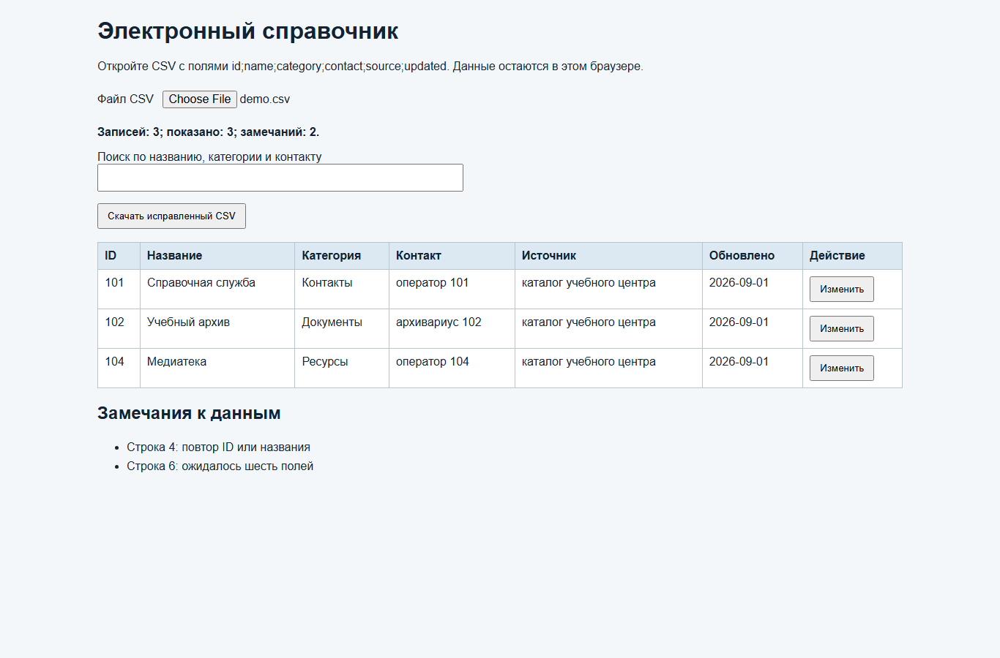
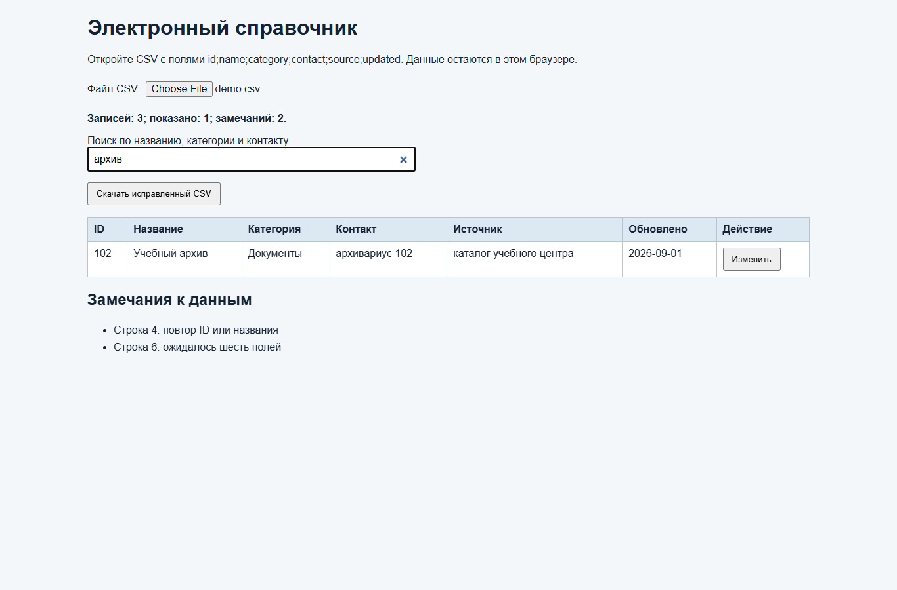
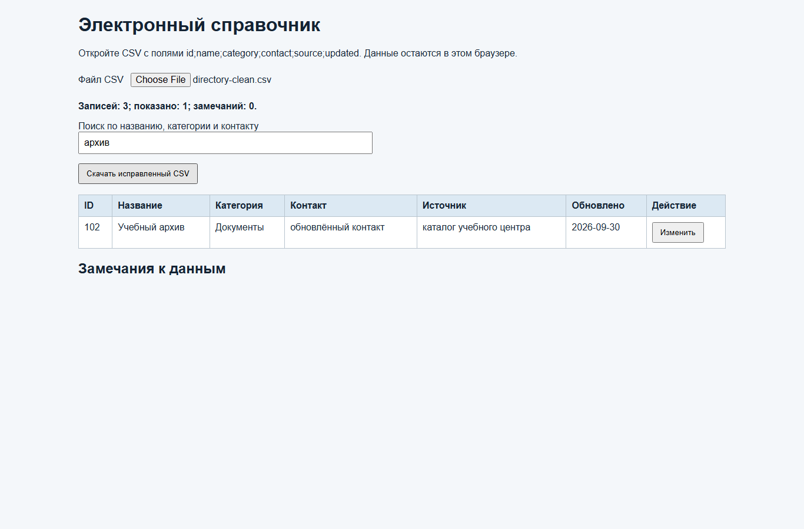

Справочная служба учебного центра
Отдельный пример: импорт записей, обнаружение повтора и неполной строки, поиск, правка и повторная проверка.
Учебный маршрут / 2026-2027
Электронный справочник: качество данных, поиск и обновление · 30 вариантов
Учебный комплектОтдельный пример: импорт записей, обнаружение повтора и неполной строки, поиск, правка и повторная проверка.
Скачать исходный проект электронного справочника (ZIP)
Начните с него: распакуйте проект, откройте index.html и проверьте импорт.
Скачать демонстрационный CSV для проверки импорта
Откройте до запуска, затем загрузите для проверки качества входных строк.
Электронный справочник сокращает время поиска сведений и даёт пользователю источник каждой записи. Проверяемое ожидание: корректные записи доступны для поиска, неполные и повторные не искажают выдачу, исправления можно выгрузить.
Скачайте исходный проект Directory-source.zip по прямой ссылке ниже и распакуйте его в отдельную папку. Затем скачайте demo.csv: на нём будете проверять импорт. Не изменяйте исходный CSV до того, как запишете прогноз результата.
Заголовок строго id;name;category;contact;source;updated. Точка с запятой отделяет поля; внутри значения её не используют. ID состоит из цифр, дата имеет вид ГГГГ-ММ-ДД, название, категория и источник обязательны. Повтор ID или названия в одной загрузке отклоняется. Такой договор нужен, чтобы импорт и экспорт понимали один файл.
Сформулируйте пользователей, действия, источники, риски дублей и ошибки ввода. Зафиксируйте пример запроса «архив» и ожидаемую запись 102. Это исходная проверка точности поиска.
В Cursor выберите File → Open Folder и папку распакованного проекта. В панели Explorer откройте index.html. Проверьте, что рядом находятся style.css и app.js. Двойной щелчок по index.html в Проводнике открывает страницу в браузере; до выбора CSV она показывает предложение выбрать файл.
Если вы воспроизводите проект с нуля, в Explorer выберите New File, создайте index.html и введите код ниже. Поле file даёт пользователю выбрать CSV, query запускает поиск, tbody rows станет таблицей записей, issues — перечнем замечаний. Подключение app.js стоит после элементов страницы, поэтому обработчики находят их при запуске.
<!doctype html>
<html lang="ru">
<head>
<meta charset="utf-8">
<meta name="viewport" content="width=device-width, initial-scale=1">
<title>Электронный справочник</title>
<link rel="stylesheet" href="style.css">
</head>
<body>
<main>
<h1>Электронный справочник</h1>
<p>Откройте CSV с полями id;name;category;contact;source;updated. Данные остаются в этом браузере.</p>
<label>Файл CSV <input id="file" type="file" accept=".csv,text/csv"></label>
<p id="status" role="status">Выберите исходный файл.</p>
<label>Поиск по названию, категории и контакту <input id="query" type="search"></label>
<button id="export" type="button">Скачать исправленный CSV</button>
<table><thead><tr><th>ID</th><th>Название</th><th>Категория</th><th>Контакт</th><th>Источник</th><th>Обновлено</th><th>Действие</th></tr></thead><tbody id="rows"></tbody></table>
<h2>Замечания к данным</h2>
<ul id="issues"></ul>
</main>
<script src="app.js"></script>
</body>
</html>Сохраните Ctrl+S, откройте index.html в браузере. Пока данных нет, таблица пуста, а строка состояния предлагает выбрать файл. Если виден только текст кода, проверьте расширение .html.
Создайте style.css через New File и внесите код ниже. Он делает таблицу читаемой, выделяет заголовки и позволяет горизонтальную прокрутку на узком экране. После Ctrl+S обновите страницу Ctrl+R.
body{font-family:Arial,sans-serif;margin:0;background:#f4f7fa;color:#142333}main{max-width:1100px;margin:auto;padding:24px}h1{margin-top:0}label{display:block;margin:16px 0}input{padding:8px;font:inherit}input[type=search]{display:block;width:100%;max-width:500px}button{padding:8px 12px;cursor:pointer}table{width:100%;border-collapse:collapse;background:white;margin-top:18px}th,td{padding:9px;border:1px solid #b8c4ce;text-align:left;vertical-align:top}th{background:#dce9f3}#status{font-weight:bold}#issues{line-height:1.6}tr:focus-within{outline:2px solid #185b91}@media(max-width:700px){table{display:block;overflow-x:auto}}Скачать демонстрационный CSV для проверки импорта
Откройте до запуска, затем загрузите для проверки качества входных строк.
Откройте demo.csv в Cursor. До запуска отметьте: строки 101, 102 и 104 корректны; повтор названия 103 и неполная строка 105 дадут замечания. Загрузка должна оставить три записи. Такой прогноз помогает отличить проверку данных от случайного успеха.
Создайте app.js в той же папке. Сначала объявите список полей и получите элементы по id. Пустые массивы records и issues будут хранить текущее состояние в памяти браузера.
const columns = ["id", "name", "category", "contact", "source", "updated"];
const fileInput = document.querySelector("#file");
const queryInput = document.querySelector("#query");
const body = document.querySelector("#rows");
const issuesList = document.querySelector("#issues");
const statusLine = document.querySelector("#status");
let records = [];
let issues = [];
Вставьте функцию parseCsv после переменных. Она убирает маркер BOM и символы CR, проверяет заголовок до чтения строк. Если заголовок неверен, ошибка касается файла целиком: старые данные сохраняются.
function parseCsv(text) {
const lines = text.replace(/^\uFEFF/, "").replace(/\r/g, "").split("\n").filter(Boolean);
if (!lines.length || lines[0].trim() !== columns.join(";")) {
throw new Error("Первая строка должна быть: " + columns.join(";"));
}
const result = [];
const warnings = [];
const ids = new Set();
const names = new Set();
for (let index = 1; index < lines.length; index++) {Продолжите ту же функцию. cells содержит поля одной строки; индекс в файле превращается в номер строки для понятного предупреждения. Ошибочная строка пропускается, но цикл продолжает работу. Множества ids и names позволяют заметить повторы до добавления записи.
const cells = lines[index].split(";").map(value => value.trim());
const line = index + 1;
if (cells.length !== columns.length) {
warnings.push(`Строка ${line}: ожидалось шесть полей`);
continue;
}
const item = Object.fromEntries(columns.map((key, position) => [key, cells[position]]));
if (!/^\d+$/.test(item.id) || !item.name || !item.category || !item.source || !/^\d{4}-\d{2}-\d{2}$/.test(item.updated)) {
warnings.push(`Строка ${line}: неверный ID, обязательное поле или дата`);
continue;
}
const normalized = item.name.toLocaleLowerCase("ru").replace(/\s+/g, " ");
if (ids.has(item.id) || names.has(normalized)) {
warnings.push(`Строка ${line}: повтор ID или названия`);
continue;
}
ids.add(item.id);
names.add(normalized);
result.push(item);
}
return { result, warnings };
}
Сохраните app.js и обновите страницу. В браузере откройте DevTools клавишей F12 → Console и введите parseCsv("id;name;category;contact;source;updated\n1;Архив;Документы;оператор;каталог;2026-09-01"). Ожидается один элемент result и пустой warnings. Выбор файла через интерфейс проверяется после добавления обработчика change ниже.

Функция render строит ячейки через textContent: содержимое CSV показывается как текст и не выполняется как HTML. Поиск сравнивает название, категорию и контакт без учёта регистра. После загрузки число записей и замечаний видно в строке состояния.
function render() {
const term = queryInput.value.trim().toLocaleLowerCase("ru");
body.replaceChildren();
for (const item of records.filter(row => [row.name, row.category, row.contact].some(value => value.toLocaleLowerCase("ru").includes(term)))) {
const tr = document.createElement("tr");
for (const key of columns) {
const td = document.createElement("td");
td.textContent = item[key];
tr.append(td);
}
const action = document.createElement("td");
const button = document.createElement("button");
button.textContent = "Изменить";
button.addEventListener("click", () => edit(item));
action.append(button);
tr.append(action);
body.append(tr);
}
issuesList.replaceChildren(...issues.map(message => {
const li = document.createElement("li");
li.textContent = message;
return li;
}));
statusLine.textContent = `Записей: ${records.length}; показано: ${body.children.length}; замечаний: ${issues.length}.`;
}
Кнопка «Изменить» открывает три поля ввода. Обязательные значения и точка с запятой проверяются до записи в массив; повтор названия также запрещён. Обновлённая дата фиксирует факт правки. После сохранения таблица перестраивается.
function edit(item) {
const name = prompt("Название", item.name);
if (name === null) return;
const category = prompt("Категория", item.category);
if (category === null) return;
const contact = prompt("Контакт", item.contact);
if (contact === null) return;
if (!name.trim() || !category.trim() || [name, category, contact].some(value => value.includes(";"))) {
alert("Название и категория обязательны; точка с запятой запрещена.");
return;
}
if (records.some(row => row !== item && row.name.toLocaleLowerCase("ru") === name.trim().toLocaleLowerCase("ru"))) {
alert("Название уже есть в справочнике.");
return;
}
Object.assign(item, { name: name.trim(), category: category.trim(), contact: contact.trim(), updated: new Date().toISOString().slice(0, 10) });
render();
}
После добавления обработчика выбора файла в следующем разделе найдите «архив», затем измените контакт записи 102 и проверьте новую дату. Попробуйте дать ей название уже существующей записи: программа должна отказать, исходное значение останется. Отмена любого окна ввода также не должна менять запись.

Добавьте обработчик change. Он читает выбранный файл средствами браузера и только после успешного разбора заменяет records и issues. Ошибка заголовка выводится отдельно; пользователь может выбрать исправленный CSV.
fileInput.addEventListener("change", async () => {
const file = fileInput.files[0];
if (!file) return;
try {
const parsed = parseCsv(await file.text());
records = parsed.result;
issues = parsed.warnings;
render();
} catch (error) {
statusLine.textContent = `Ошибка файла: ${error.message}`;
}
});
queryInput.addEventListener("input", render);Сохраните app.js, обновите страницу и выберите demo.csv. Ожидаются три записи и два замечания. Если таблица остаётся пустой, откройте DevTools клавишей F12 → Console и проверьте имя app.js и номер строки ошибки. Затем выполните поиск и правку, описанные выше.
Создайте CSV из текущего массива, добавьте BOM для открытия кириллицы в табличных редакторах и вызовите скачивание. Адрес Blob освобождается после начала загрузки. Имя directory-clean.csv отличает результат от исходника.
document.querySelector("#export").addEventListener("click", () => {
const text = [columns.join(";"), ...records.map(item => columns.map(key => item[key]).join(";"))].join("\n") + "\n";
const url = URL.createObjectURL(new Blob(["\uFEFF", text], { type: "text/csv;charset=utf-8" }));
const link = document.createElement("a");
link.href = url;
link.download = "directory-clean.csv";
link.click();
setTimeout(() => URL.revokeObjectURL(url), 1000);
});Выгрузите результат, откройте directory-clean.csv в текстовом редакторе и загрузите обратно. Проверьте исправленный контакт, отсутствие повторов, поиск «архив» и сохранение остальных записей. Если CSV показывает слитые столбцы в табличной программе, укажите разделитель «;» при импорте; сам файл проверяйте как текст.

Скачайте CSV непосредственно из карточки своего варианта. Сначала опишите названия, категории и правило уникальности, затем загрузите файл и сравните предупреждения с прогнозом. Для особого требования сопоставьте принятую запись с источником, исправьте неточность через кнопку «Изменить» и перепроверьте экспорт. Общие функции проекта сохраняются.
Запишите назначение справочника, пользователя, поля, источники, правила проверки, поиск и сценарии ошибок. Для особого требования варианта укажите входной пример, ожидаемый результат и способ проверки. Это позволяет сопоставить реализацию с согласованной потребностью.
Опишите роли файлов: index.html задаёт элементы, style.css — представление, app.js — чтение, проверку, показ, правку и экспорт. Создайте отдельный репозиторий проекта; сохраняйте изменения небольшими коммитами после работающей проверки. Не помещайте в учебный репозиторий реальные личные контакты.
В пользовательском руководстве объясните выбор CSV, поиск, исправление и выгрузку. В руководстве разработчика зафиксируйте формат данных, функции, особое правило варианта и воспроизводимые проверки. Укажите версию браузера и дату проверки. При сдаче проекта приложите ссылку на его репозиторий.